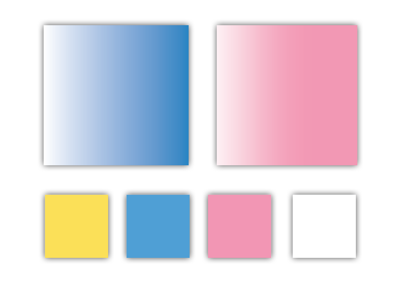
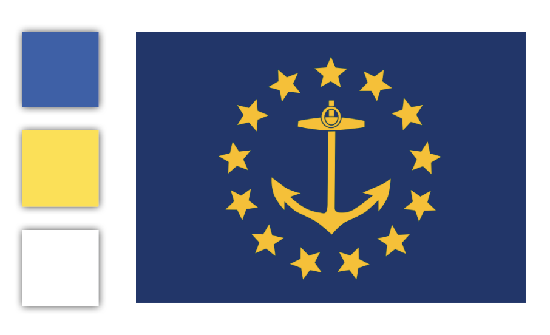

The color scheme of the flag was originally based off of the colors of the flag of Rhode Island
The bright pink was also included to make the designs more visible and to avoid appearing to have completely appropriated the Rhode Island flag.